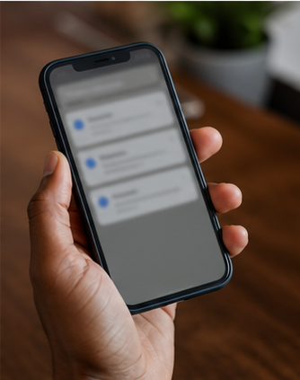

The first reply decides who gets the job.
Product sites in this category need punchy problem proof, quick calculators, obvious trials, and screenshots that feel operational instead of abstract.

Lead landsReply sent
Slot booked
Leak calculator
Put a number on every slow reply.
NightSwitch is intentionally small: recover the leads that already came looking. No ad spend. No rebrand. No six-month CRM migration.
- Works with the channels the business already uses.
- Escalates only qualified enquiries to the owner or sales team.
- Shows response time, contact rate, booked rate, and recovery value.
1
Catch
Every enquiry enters one signal queue with source and timestamp.
2
Reply
A helpful first message asks the next best question immediately.
3
Book
Qualified leads choose a slot, receive reminders, and show up warm.
4
Prove
The dashboard shows what was caught, booked, and recovered.
Signal board
Median reply time42s
Qualified contact rate58%
Booked from cold lead24%
Signal analytics
Partner-ready
Leak audit